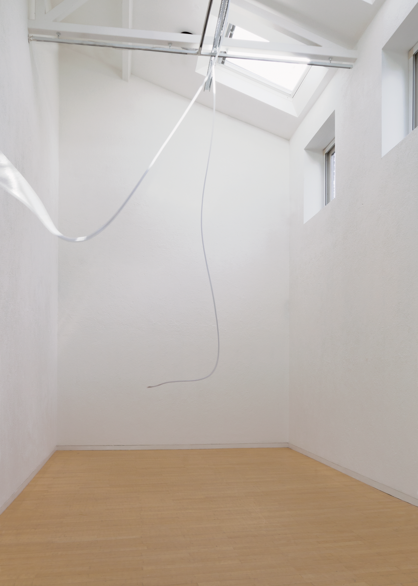

Gustav Metzger Foundation supports Kettle's Yard
Exhibition | 2 February 2026

The Gustav Metzger Foundation is proud to support Kettle's Yard, where Gustav featured in a major solo exhibition in 2014 - and where he produced some of his last artworks.The exhibition Artists for Kettle's Yard will feature artworks generously gifted by donors to support The Jim and Helen Ede Fund Endowment Campaign ahead of Kettle's Yard's 70th anniversary in 2027.
Each artwork will be for sale in the galleries. Selected works will also be available through Sotheby's modern and contemporary sales opening in June 2026.
Encompassing painting, sculpture, photography, and ceramics, this special exhibition will include work by celebrated contemporary artists Rana Begum, Antony Gormley, Jennifer Lee, Veronica Ryan, Megan Rooney and Caroline Walker and many others.
Artists for Kettle's Yard celebrates Kettle's Yard's relationships with artists working at the forefront of their practice, and will look ahead to an exciting future for the gallery.